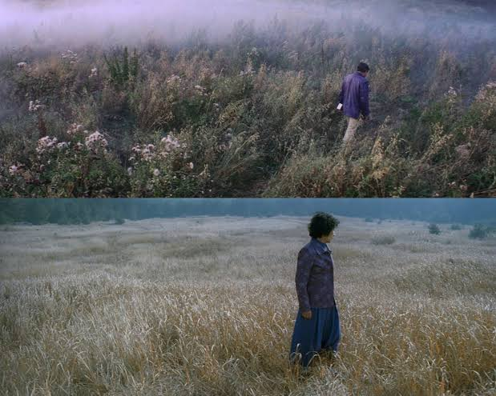

ComfyUI · Romanzo grafico · 2026
AELITA: PuLID vs Flux Kontext per lo storyboard di romanzi grafici
Costruire una pipeline di storyboard AI per l'adattamento in romanzo grafico del romanzo di fantascienza sovietica di Alexei Tolstoy — e cosa fanno davvero i due principali approcci per la preservazione dell'identità visiva.

Il linguaggio visivo di Tarkovsky come punto di riferimento: campi piatti e saturi, figure schiacciante dall'ambiente. Il romanzo grafico AELITA opera nello stesso registro — paesaggio sovietico, tecnologia retro-futurista, stile illustrato che nessun modello AI preserva naturalmente.
AELITA è un adattamento in romanzo grafico del romanzo di fantascienza sovietica del 1923 di Alexei Tolstoy — costruito interamente in ComfyUI su RunPod, usando modelli basati su Flux. Il cast include due protagonisti umani (Los e Gusev) e personaggi marziani dalla pelle blu con regole di aspetto rigide su tutti gli 8 pannelli.
La domanda architettonica centrale: quale meccanismo di preservazione dell'identità produce personaggi coerenti tra i pannelli — PuLID (blocco biometrico del volto) o Flux Kontext (condizionamento da immagine di riferimento)? La risposta si è rivelata né semplice né simmetrica.
L'architettura che ha funzionato per AELITA: Flux Kontext alimentato con crop dei pannelli (non estrazioni di personaggi mascherati). Niente PuLID. Niente ControlNet depth. Prompt generati dall'API di Claude Sonnet applicando regole cinematografiche — angolo di camera, ancoraggio spaziale LEFT:/RIGHT:, ancoraggio di scala, minimi di densità ambientale per i campi larghi. Un grafo a 69 nodi per 8 output, JSON costruito programmaticamente da uno script generatore dedicato.
La domanda empirica aperta: una pipeline ibrida — generazione vault con PuLID su RunPod che alimenta Kontext Max per pannello — è in attesa di un test a 10 pannelli. L'ipotesi: PuLID genera frame di riferimento fotorealistici dei personaggi; Kontext usa quei frame come ancoraggi di condizionamento accettando un LoRA di stile più forte. Se l'ipotesi regge, un output illustrato con identità coerente diventa raggiungibile.
CONFRONTO
| DIMENSIONE | PuLID | Flux Kontext |
|---|---|---|
| Meccanismo identità | Blocco biometrico viso | Condizionamento visivo full-frame |
| Preservazione stile | Nessuna — sovrascrive con output fotorealistico | Nessuna — stesso registro fotorealistico |
| Mascheratura personaggi | Richiesta — un nodo per volto | Non necessaria — i crop funzionano |
| Ideale per | Storyboard cinematografico fotorealistico | Romanzo grafico illustrato (con style LoRA) |
OPEN SOURCE · TOOL
ComfyUI — node-based Stable Diffusion UI
github.com/comfyanonymous/ComfyUI